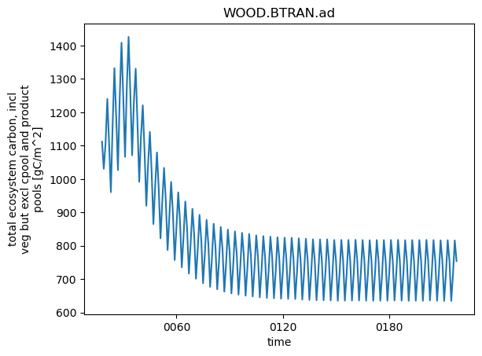
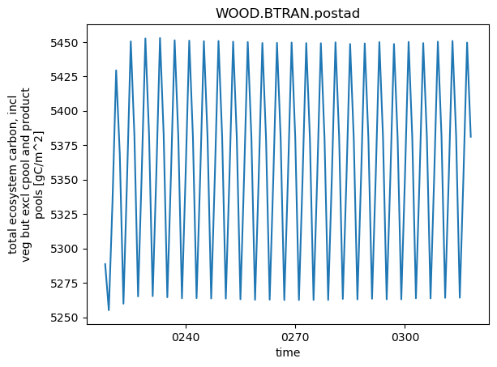

Customize your case: Spinning up the model#
This is an optional tutorial that provides some additional guidance for spinning up CTSM at NEON sites.
This tutorial assumes that you’ve already done a quick sensitivity test that your parameter modifications, namelist changes, or other code modifications changes answers is quick, transient simulations. It may be helpful to refer back to these tutorials if you have questions or want more information about creating an experimental case.
In this tutorial you will use run_neon to:#
Start an accelerated decomposition (ad) spinup from cold start.
Continue a postAD run,
Do a transient simulation
Spinup, or model initialization from a cold start, actually takes a little bit of time. Let’s briefly cover what spinup means.
Background on spinup#
We make make steady state assumptions about initial state of ecosystem properties like temperature water, snow, ice, carbon & nitrogen. This is the equilibrium state of the model, given the forcing data. In model experiments we make modifications to namelist settings, the parameter files, surface dataset, or underlying model code we also need to generate new initial conditions.
In runs with active biogoechemistry, like these NEON simulations, this means we need to get the ecosystem carbon and nigrogen pools with long turnover times into steady state. The turnover and decomposition of these slow pools is mathamatically accelerated in our AD (accelerated decomposition) case. This means we:
Accelerate turnover of wood, litter and soil pools.
Accelerate advection and diffusion terms too
In CLM5 and CTSM5.1 this is calculated as a function of latitude so that spinup is more accelerated in high latitude regions.
Spinning up CTSM consists of 3 parts that includes:
ad, for accelerated decomposition,
postAD, which occurs after ad spinup, and
transient.
More information about spinup is available in the CLM user’s guide. Briefly:
During ad and postAD spinup, we just cycle over several years of input data. For most NEON sites we cycle over four years of data from 2018-2021. This also is the same time period we have data for running transient simulations, but as the NEON record gets longer, so too will these transient simulations.
During ad and postAD spinup we hold other inputs constant (e.g., atmospheric CO2 concentrations, N deposition, etc.). For transient runs these inputs also change over time.
During ad spinup we accelerated the turnover of slow pools of C and N that normally have a long residence time in ecosystems (wood and soils).
During postAD runs we take away this accelerated decomposition and let the ecosystem settle into its equilibrium, or steady-state under ‘normal conditions’.
Finally, transient runs are used to compare with observations, and include high frequency output that we can compare with flux tower measurements.
NOTE: for runs without active biogeochemistry (called satelite shenology, or SP simulations), we still need to equilibrate the model. This is much faster and doesn’t require accelerated decomposition.
For most temperate systems < 200 years of AD simulations seems adequate, but in colder ecosystems (like NEON sites in Alaska) this can take much longer because cold temperatures slow the turnover of soil organic matter. We have this set up already in the usermod directories that are used to configure your NEON case with run_neon. We can look to see if total ecosystem carbon pools (the sum of all vegetation, litter and soil C stocks) look to be equilibrated after 200 years.

LOOK#
Does the model seem to have achieved steady state?
Why are there periodic oscillations in the total ecosystem C pools?
This plot was generated using the QuickPlot_CTSM_spinup notebook, which you can modify for your own site or simulation.
After your AD simulation is finished, we have to take the model out of AD mode. We call these postAD simulations.
Have a look to see if 100 years is enough to get pools to steady state?

LOOK#
In postad simulations ecosystem carbon and nitrogen are much larger than in the ad case.
Does the model seem to have achieved steady state?
Let’s get started!#
NOTICE: If you’re running this notebook through the NCAR JupyterHub login, you need to be on a Cheyenne login node (NOT Casper).
Set up environment#
It is important in order to have all the tools and packages you need to run simulations.
TIP: If you’re running on Cheyenne, you may need to uncomment the the following two lines of code. This will set up your conda environment correctly.
This is not required if your running CESM-Lab in the cloud.
#module purge
#module load conda ncarenv
1. Create a new ad case.#
Because we’re going to modify namelist options that will change answers in CLM we have to run this case through an accelerated decompostion (AD) and postAD spinup. This will generate new initial conditions for our experimental case, but it also takes a long time.
1.1 Check that you’ve run a control case.#
export neon_site='HARV' # the site you want to run
ls ~/scratch/NEON_cases/$neon_site.transient
If the code block above says “No such file or directory” you need to go back and create a control case for your neon_site using clone_case.
If you have run a control case, which includes flies like:
case.build, case.setup, and case.submit;
env_build.xml, env_batch.xml, and env_run.xml; and
user_nl_clm, user_nl_datm, and user_nl_datm_streams
Then you can move on to the next step
1.3 Create an experimental clone#
In our experimental case we’ll changing the foliar C:N ratio for a temperate deciduous tree.
HINT: It’s helpful to have descriptive experiment names.
export experiment='foliarCN-30' # this is name of your experimenal case
Since we’re creating an experimental case that will change answers in the model we should run a full AD and postAD spinup. The same run_neon script makes this simple.
Then run_neon with the following flags:
--experiment $experiment--run-type ad--setup-only
NOTE Don’t worry about build warnings from the list below, we’ll build the model later.
./run_neon.py --neon-sites $neon_site \
--output-root ~/scratch/NEON_cases \
--experiment $experiment \
--run-type ad \
--overwrite \
--setup-only
echo '----Your experiment.ad case has been created----'
1.4 Customizing your case: Namelist changes#
The configuration of CLM can be customized via namelist modifications.
These changes made using namelist files like user_nl_clm
1.4.1 Move to the case directory for your experimental clone#
cd ~/scratch/NEON_cases/$neon_site.$experiment.ad
1.4.2 Customize your case#
For this experiment we’re changing the foliar C:N ratio for temperate deciduous forests. Do do this we have to point to our modified parameter file. We can change user_nl_clm using an editor, by opening it directly in jupyter hub, or with the following command.
# This is the path to the modified parameter file you created
# If you're running on cheyenne, uncomment the line below
#echo "paramfile = '/glade/scratch/$USER/NEON_cases/modified_inputs/ctsm51_params.c211112_tdf_leafcn30.nc'" >> user_nl_clm
# If you're running with CESM-Lab in the cloud, uncomment the line below
echo "paramfile = '/scratch/$USER/NEON_cases/modified_inputs/ctsm51_params.c211112_tdf_leafcn30.nc'" >> user_nl_clm
Let make sure this worked. We can:
preview namelists;
check the
lnd_infile.
./preview_namelists
cat CaseDocs/lnd_in | head -50
There’s a lot to dig into here! So we’ll just stick with a few highlights.
Take a look#
See what printed to in the cell above and answer the following questions
finidat: What initial conditions file are you using?fsurdat: What surface dataset are you using?paramfile: What parameter file are you using?spinup_state: What is your spinup state?
Does this make sense? Answers are in the hidden cell below.
finidat = ' 'None! we’re starting from a coldstart.fsurdat = ".../surfdata_1x1_NEON_HARV_hist_78pfts_CMIP6_simyr2000_c230111.nc"This the surface dataset that’s been modified for our NEON site.paramfile = '.../ctsm51_params.c211112_tdf_leafcn30.nc'is our modified parameter filespinup_state = 2, which is used for ad mode
Additional information about customizing CTSM’s configurations, including namelist modifications, are available in the CTSM users guide Namelist changes can also be used to modify variables on history file output. Simple modification of history file output DOES NOT require spinning up the model.
A list of all the CTSM history fields are available here
A list of all the CTSM-FATES history fields are available here
1.5 setup, build, and submit the case#
./case.setup
qcmd -- ./case.build
If you get a notice that MODEL BUILD HAS FINISHED SUCCESSFULLY, submit your case.
./case.submit
Running an AD spinup for 200 model years will take a few hours of wall clock time.
Don’t move on with this tutorial until after the AD simulation is completed.
After your simulation is finised you can check results with the QuickPlot_CTSM_spinup notebook.
2 postAD simulations#
After the model has reached steady-state we have to take it out of AD mode, which requires another ~100 years of simulations. We also have to create and build a new base case for postAD runs.
2.1 Be sure your AD case is finished.#
HINT If the cell below fails, you may need to set environmental variables for $neon_site and $experiment again.
cat ~/scratch/NEON_cases/$neon_site.$experiment.ad/CaseStatus | tail -10
The last line of your AD CaseStatus file should read ... st_archive success ...
If this isn’t true, your case may still be running, or it may have failed
You can use
qstat -u $USER, alsoLook an the
lnd.log.*andcesm.log.*files in your case/run directory (~/scratch/NEON_cases/$neon_site.$experiment.ad/run)
IF YOUR AD RUN IS COMPLETED, YOU CAN MOVE ON#
2.2 Navigate to your source code#
cd ~/CTSM/tools/site_and_regional
2.3 Create a postAD experimental case#
Now we’re using a different --run-type that’s appropriate for the case.
As before, you’ll get warning related to the the model build. This is OK, we’ll built our case later.
./run_neon.py --neon-sites $neon_site \
--output-root ~/scratch/NEON_cases \
--experiment $experiment \
--run-type postad \
--overwrite \
--setup-only
echo '----Your experiment.postad case has been created----'
2.4 Customize your case#
This should follow namelist, xml, or other changes you made in the ad run, section 1.4, above
cd ~/scratch/NEON_cases/$neon_site.$experiment.postad
# This is the path to the modified parameter file you created
# If you're running on cheyenne, uncomment the line below
#echo "paramfile = '/glade/scratch/$USER/NEON_cases/modified_inputs/ctsm51_params.c211112_tdf_leafcn30.nc'" >> user_nl_clm
# If you're running with CESM-Lab in the cloud, uncomment the line below
echo "paramfile = '/scratch/$USER/NEON_cases/modified_inputs/ctsm51_params.c211112_tdf_leafcn30.nc'" >> user_nl_clm
./preview_namelists
Stop and check!
How are the
lnd_infiles different in our ad and postad cases?
diff CaseDocs/lnd_in ../$neon_site.$experiment.ad/CaseDocs/lnd_in
the postad case has:
finidat = 'HARV.foliarCN-30.ad...'initial conditionsspinup_state = 0meaning we’re out of ad mode nowdifferent builds
2.5 setup, build, and submit the case#
./case.setup
qcmd -- ./case.build
./case.submit
Running an postAD run for 100 model years will also take about an hour of wall clock time.
Don’t move on with this tutorial until after the post simulation is completed.
After your simulation is finised you can check postAD results with the QuickPlot_CTSM_spinup notebook.
3 Transient simulation#
Now we’re finally ready to go ahead with the transient simulation
3.1 Be sure your postAD case is finished.#
HINT If the cell below fails, you may need to set environmental variables for $neon_site and $experiment again.
cat ~/scratch/NEON_cases/$neon_site.$experiment.postad/CaseStatus | tail -10
The last line of your postad CaseStatus file should read ... st_archive success ...
If this isn’t true, your case may still be running, or it may have failed
You can use
qstat -u $USER, alsoLook an the
lnd.log.*andcesm.log.*files in your case/run directory (~/scratch/NEON_cases/$neon_site.$experiment.postad/run)
IF YOUR POSTAD RUN IS COMPLETED, YOU CAN MOVE ON#
3.2 Navigate to your source code#
cd ~/CTSM/tools/site_and_regional
3.3 Create a transient experimental case#
Now we’re using:
--run-type transientthat’s appropriate for the case and--run-from-postadthat will grab initial conditions from our postAD experimental case.
To avoid confusion, we won’t run this from a base_case, athough it does mean we have to build the transient case again.
./run_neon.py --neon-sites $neon_site \
--output-root ~/scratch/NEON_cases \
--experiment $experiment \
--run-type transient \
--overwrite \
--setup-only \
--run-from-postad
3.4 Customize your case#
This should follow namelist, xml, or other changes you made in the ad run, sections 1.4 and 2.4, above
cd ~/scratch/NEON_cases/$neon_site.$experiment.transient
# This is the path to the modified parameter file you created
# If you're running on cheyenne, uncomment the line below
#echo "paramfile = '/glade/scratch/$USER/NEON_cases/modified_inputs/ctsm51_params.c211112_tdf_leafcn30.nc'" >> user_nl_clm
# If you're running with CESM-Lab in the cloud, uncomment the line below
echo "paramfile = '/scratch/$USER/NEON_cases/modified_inputs/ctsm51_params.c211112_tdf_leafcn30.nc'" >> user_nl_clmcd ~/scratch/NEON_cases/$new_case.$experiment.transient
./preview_namelists
Stop and check!
How are the
lnd_infiles different in our postAD and transient cases?Do these differences make sense?
diff CaseDocs/lnd_in ../$neon_site.$experiment.postad/CaseDocs/lnd_in
Double check#
It’s a good idea to make sure cases have expected differences.
See if this is true for our control and experimental transient cases.
How are the
lnd_infiles different in our control and experimental cases?Do these differences make sense?
diff CaseDocs/lnd_in ../$neon_site.transient/CaseDocs/lnd_in
3.5 setup, build, and submit the case#
./case.setup
qcmd -- ./case.build
./case.submit
You’ve created and run a full spinup for an experimental case of CLM at the NEON tower you selected!
Now we need to see how the simulations are different.
If you’re developing this tutorial:
Before saving and pushing this code to github go to Kernel and Restart kernel and clear all outputs...